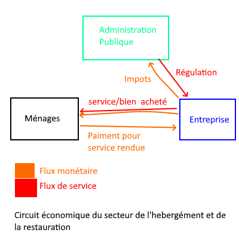

Sur cette page, il y a l'analyse économique du sceteur de la restauration et de l'hébergements
Le code NACE/NAF correspondant à ce secteur économique est : Hébergement et restauration. Ce secteur regroupe l’ensemble des activités dont l’objectif principal est de proposer un hébergement de courte durée et/ou des services de restauration et de boissons.
Le domaine de l’hébergement comprend les hôtels, auberges, chambres d’hôtes, ainsi que les hébergements touristiques ou liés au travail de courte durée. Le domaine de la restauration, lui, rassemble les restaurants traditionnels, la restauration rapide, les bars et les cafés. À l’inverse, ces activités n’incluent pas les locations de longue durée, la production alimentaire du secteur primaire ou l’hébergement d’urgence et médico-social.
Les acteurs impliqués dans ce secteur sont les chaînes d’hôtels, les restaurants et les associations intervenant dans ce domaine, comme celles fournissant des logements aux personnes en difficulté ou organisant des maraudes alimentaires. Nous avons choisi d’étudier ce secteur à l’échelle nationale.
Il y a plus d’un million de travailleurs dans ce secteur en France, et le chiffre d’affaires global en 2024 atteint 69 milliards d’euros (en base 2020). On recense un total de 219 516 établissements en 2024, dont la taille moyenne correspond à des PME. Entre 2023 et 2024, on observe une croissance de la valeur ajoutée de +11,65 % dans le secteur. Le poids de l’hébergement et de la restauration représente environ 20 % du PIB brut de la France ; il reste toutefois essentiel de préciser que ces données incluent le transport, faute de statistiques permettant de les distinguer.
Ce secteur est un secteur dynamique et en évolution, mais on observe aussi des cas de faillites et de fusions, comme l’exemple de l’entreprise Mammouth qui a été absorbé étant rachetée par Auchan. On remarque une légère tendance à la baisse de l’activité depuis le début de l’année 2025, ce qui s’explique par la diminution du pouvoir d’achat, freinant la fréquentation des restaurants et des hébergements par les ménages. Une baisse importante avait également été enregistrée durant la période du COVID-19, s’étendant de mai 2020 à mars 2021.
Au niveau de la structure du marché, le secteur se divise en plusieurs sous-marchés, chacun présentant sa propre organisation. Dans l’hôtellerie, le marché reste globalement atomisé, même si une tendance au monopole apparaît avec le groupe Accor, qui détient un grand nombre de chaînes hôtelières. Cela pourrait, à terme, rapprocher le secteur d’une situation de quasi-monopole. Accor représente aujourd’hui environ 25 % du marché, ce qui reste toutefois limité face aux hôtels indépendants, encore largement majoritaires en France. Du côté de la restauration, on observe également un marché très atomisé, marqué par une forte concurrence liée au nombre important de restaurants indépendants (près de 90 %), dits traditionnels, qui constituent l’essentiel de l’offre. Enfin, la grande distribution se caractérise plutôt par un oligopole, avec peu d’acteurs présents en raison des coûts élevés d’ouverture (bâtiments, personnel, etc.) et une rivalité intense. Les leaders y détiennent des parts de marché importantes, comme Carrefour avec environ 20 % du secteur ou Leclerc qui atteint 24 %.
L’État intervient assez souvent dans ce secteur, principalement dans les cas de fraudes. Son action passe par la DGCCRF et l’URSSAF, qui veillent à la bonne application des lois concernant les conditions de travail, les normes et la qualité des produits. Les entreprises du secteur bénéficient également de subventions fiscales, comme la réduction de TVA ou certaines aides à l’embauche, ainsi que de prêts accordés par la chambre de commerce pour moderniser leurs équipements et leurs technologies (CCI). Ces soutiens sont fournis par l’État dans l’objectif de faire émerger des acteurs capables de s’imposer à l’international, dans une logique de politique industrielle à long terme. Sur le plan socio démographique, la demande est variée mais fortement concentrée sur les jeunes (18-49 ans) et reste constante, car elle répond à un besoin de première nécessité. Le secteur est aussi l’un des premiers touchés par l’inflation, car la demande est stable et les produits utilisés sont nombreux et variés, la nourriture constituant une matière première essentielle dans cette activité.
| Type d'établissement | Taux d'EBE ( En % du Chiffre d'affaire )* | Taux de résultat Net ( En % du Chiffre d'affaire ) |
|---|---|---|
| Restaurant traditionnels | 8-15% | 2-5% |
| Restauration rapide | 12-20% | 4-8% |
| Restauration Gastronomique | 15-25% | 5-10% |
| Hotellerie éco/moyen de gamme | 20-35% | 5-15% |
| Hotellerie de luxe | 25-40% | 10-20% |
On observe environ 5 % de bénéfice dans la grande distribution et autour de 15 % dans l’hôtellerie. Le secteur nécessite plusieurs millions d’euros d’investissement initial (bâtiments, employés, stocks), ainsi que des dépenses régulières pour se conformer aux normes en vigueur (hygiène, sécurité, conditions de travail). La R&D joue également un rôle important pour rester compétitif face à la concurrence. On utilise aussi l’ETP pour mesurer la productivité dans le secteur (€ / ETP). Ainsi, pour un restaurant type, en appliquant la formule (Productivité = CA / ETP), on obtient une fourchette allant d’environ 42 k€ à 180 k€ par an.
Le marché présente actuellement une tendance à s’implanter davantage sur le web, notamment avec les systèmes de réservation en ligne ou les services de drive et de livraison. On observe également une recherche d’innovation, en partie parce que la dernière véritable avancée dans le domaine du drive remonte à plus de sept ans, sa démocratisation ayant eu lieu vers 2015 grâce à internet. Le marché s’ouvre aussi à l’écologie, notamment avec les gammes bio qui sont présentes depuis une vingtaine d’années.

Le circuit économique est lui assez simple avec une vente de bien et de services selon les établissement, et l’Etat, qui interagit pour récolter les impôts et réguler le secteur en cas de besoin pour fournir un services et des bien sain pour les consommateurs qui sont ici les ménages